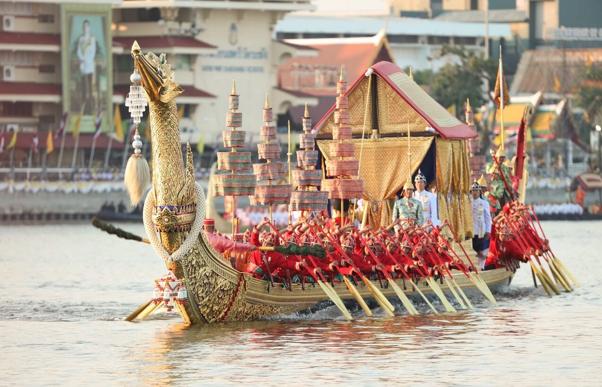

เนื้อเรื่องย่อ

กล่าวถึงขบวนพยุหยาตราทางชลมารค ซึ่งประกอบด้วยเรือพระที่นั่งกิ่ง และเรือที่มีโขนเรือเป็นรูปสัตว์ต่าง ๆ คือ เรือ ครุฑยุดนาค เรือไกรสรมุข เรือสมรรถชัย เรือสุวรรณหงษ์ เรือชัย เรือคชสีห์ เรือม้า เรือสิงห์ เรือนาคา (วาสุกรี) เรือมังกร เรือเลียงผา เรืออินทรี เห่ ชมปลา กล่าวพรรณนาชมปลาต่าง ๆ มี ปลานวลจันทร์ คางเบือน ตะเพียน กระแห แก้มช้ำ ปลาทุก น้ำเงิน ปลากราย หางไก่ ปลาสร้อย เนื้ออ่อน ปลาเสือ แมลงภู่ หวีเกศ ชะแวง ชะวาด ปลาแปบ เห่ ชมไม้ เมื่อเรือแล่นเลียบชายฝั่ง ชมไม้ที่เห็นตามชายฝั่ง ซึ่งมี นางแย้ม จำปา ประยงค์ พุดจีบ พิกุล สุกรม สายหยุด พุทธชาด บุนนาค เต็ง แต้ว แก้ว กาหลง มะลิวัลย์ ลำดวน เห่ชมนก เมื่อใกล้พลบค่ำเห็นนกบินกลับรัง ก็ชมนกต่าง ๆ มี นกยูง สร้อยทอง สาลิกา นางนวล แก้ว ไก่ฟ้า แขกเต้า ดุเหว่า โนรี สัตวา และจบลงด้วยบทเห่ครวญ เป็นการคร่ำครวญ คิดถึงนางที่เป็นที่รักในยามค่ำคืน